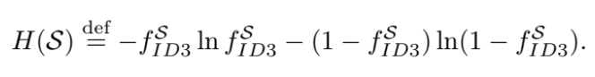
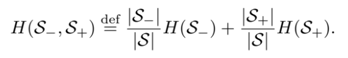

Machine Learning
Chapter 3 - Fundamental Algorithms
Linear Regression
-
f(x)=wx+b => different from SVM.
-
SVM: maximize margin
-
Linear Regression: minimize the SQUARED ERROR LOSS/ MEAN SQUARED ERROR
-
Why squared but not absolute value?
-
Absolute value does not have a continuous derivative. Hard to find closed forms to optimization problems (e.g. gradient descent).
-
Can use the powers 3 or 4… But harder to use their derivatives to optimize the solution.
-
“The hyperplane in the SVM plays the role of the decision boundary: it’s used to separate two groups of examples from one another”.
-
“The hyperplane in linear regression is chosen to be as close to all training examples as possible.”
-
Can use gradient descent
-
Advantage: does not overfit much
Logistic Regression
-
Not really regression, just the function looks like that of a regression algorithm.
-
The sigmoid function adjusts the cost function hypotheses to adjust the algorithm proportionally for worse estimations
-
x => (-infinity, infinity), while y = 0 or 1.
-
Optimize:
-
Because of e, in practice it’s more convenient to maximize the log-likelihood function :
-
Because ln is strictly increasing, maximizing the function means to maximize the argument. So solving the log-likelihood function works for solving the likelihood function
Decision Tree
(See also
https://cis.temple.edu/~giorgio/cis587/readings/id3-c45.html
).
ID3 -
One of the various decision tree algorithms
-
The optimization criterion =
average log-likelihood
:

-
Starts with a node that contains all examples.
-
A. Searches through all features j = 1, … D and all threholds t.
B. Splits the set S into two subsets. One with values greater than t, one with values smaller than t.
-
Finds the pair of ( j, t ) with the best info gain and actually splits the set.
-
Recursively does the above until
-
There is only one example in each node.
-
Failed to find an attribute to split upon.
-
The reachs some maximum depth.
-
The split reduces the entropy less than some e found in experiments.
-
A criterion called “
Entropy
”.

-
Where S is a set of examples
-
When calculating examples with certain ( j, t ), the entropy of a split, which is denoted as H(S-, S+) is simply a weighted sum of two entropies.

-
At each step, we want to minimize the entropy.
C4.5
-
The most widly used algorithm for decision tree. Has more features
-
Supports both continuous and discrete features.
-
Handles incomplete examples.
-
Solves overfitting problem with
pruning.